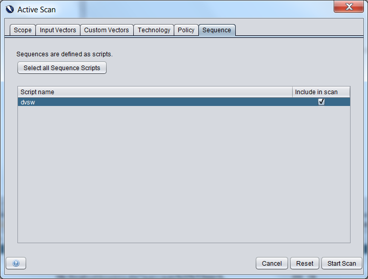

Pagkasunod-sunod ng Scanner
Ang add-on na ito ay nagpapadali sa pagtatala at pag-scan ng mga sunod-sunod na mga kahilingan.
Sa ialng mga web na mga aplikasyon na ito ay kinakailangan para sa partikular na mga pangyayari o mga pahina upang ma-access o matapos ang isang tiyak na kaayusan.
Sa pamamagitan ng pagtatala sa pagkasunod-sunod at pagkatapos ay pag-scan nito, ito ay posible upang masiguro na umaapaw na pangyayari na inaasahan na paraan.
Paglikha ng mga pagkasunod-sunod
Isang pagkasunod-sunod na script ay dapat nailikha para sa bawat maramihan-hakbang na operasyon sa aplikasyon/dako na sinubukan.
Mayroong dalawang opsyon para sa paglikha ng pagkasunod-sunod:
- Sa alinman na mga site tree o kasaysayan na tab pumili ng mga kahilingan na gusto ninyong isama, i-kanan klik, at gamit ang "Dagdag sa Zest Script" (naging pagpili sa paglikha ng isang bagong script o pagdagdag sa isang umiiral na pagkasunod-sunod na script).
- Mula sa main tool bar, gamitin ang "Talaan ng Bagong Zest Script..." na button, pagpili ng "Pagkasunod-sunod" bilang uri.
Pag-scan
Kapag ang isang bagong Aktibong Scan ay nalikha mayroong isang "Pagkasunod-sunod" na tab na kung saan maaari mong piliin ang mga pagkasunod-sunod para makilatis.
Paalala: Ang Pagkasunod-sunod na tab ay lamang nakikita kapag "Ipakita ang advance na mga opsyon" ay napili.
Para sa halimbawa:

Tingnan din
Ang ZAP na Maraming-Hakbang na blog